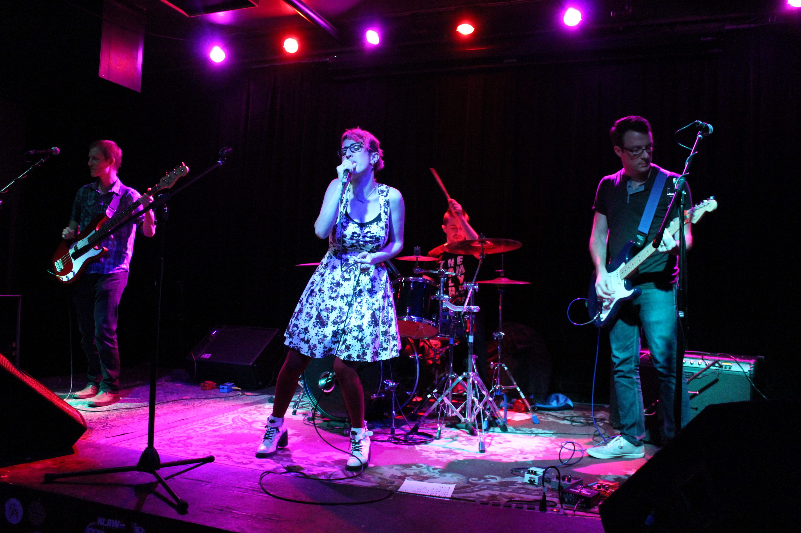

About Me

Natalie “Nicole” Sanchez is a finishing PhD candidate at the University of Washington. She is a member of the UW Nbody Shop and uses cosmological simulations of galaxies to better understand galactic evolution. With her advisor, Professor Jessica Werk, Nicole is particularly interested in understanding the mechanisms which drive the metal enrichment of the circumgalactic medium, especially the effects of supermassive black hole feedback. Nicole will be defending her PhD next summer and is currently applying to Postdoc positions. When not busy with research, Nicole is the lead singer of Seattle’s premiere (and only) all-astronomer rock band, Night Lunch.
Education:
PhD Astronomy, intended 2022
MSci AStronomy 2018, University of Washington, Seattle
NASA FINESST Researcher
MA Physics 2016, Fisk University
Fisk-Vanderbilt Masters-to-PhD Bridge Program Alumna
BSci Physics 2014, California Polytechnic University, Pomona
CAMPARE Program Alumna
Research Interests:
- Cosmological and zoom-in simulations of Milky Way-mass (MW) galaxies and their circumgalactic medium (CGM)
- Co-evolution of MW-mass galaxies, CGM, and supermassive black holes (SMBH)
- Galaxy regulation at low redshifts and quenching in MW-mass galaxies
- Theoretical and Observational comparisons of CGM gas properties and dynamics
- Metal retention and flow in MW-mass galaxies; Synthetic observations in simulations
Publications:
One-Two Quench: A Double Minor Merger Scenario
N. Nicole Sanchez, Michael Tremmel, Jessica K. Werk, Andrew Pontzen, Charlotte Christensen, Thomas Quinn, Sarah Loebman, Akaxia Cruz, 2021ApJ, 911, 116S. April 2021
Not So Heavy Metals: Black Holes Feedback Enriches the Circumgalactic Medium
N. Nicole Sanchez, Jessica K. Werk, Michael Tremmel, Andrew Pontzen, Charlotte Christensen, Thomas Quinn, Akaxia Cruz, 2019ApJ, 882, 8S. September 2019
Cosmological Hydrodynamic Simulations of Preferential Accretion in the SMBH of Milky Way Size Galaxies
N. Nicole Sanchez, Jillian M. Bellovary, Kelly Holley-Bockelmann, Michael Tremmel, Alyson Brooks, Fabio Governato, Tom Quinn, Marta Volonteri, James Wadsley, 2018ApJ, 860, 20S. June 2018